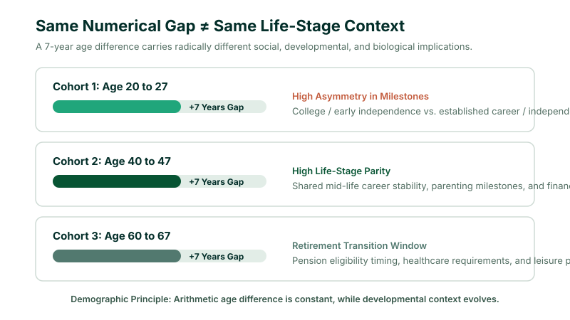
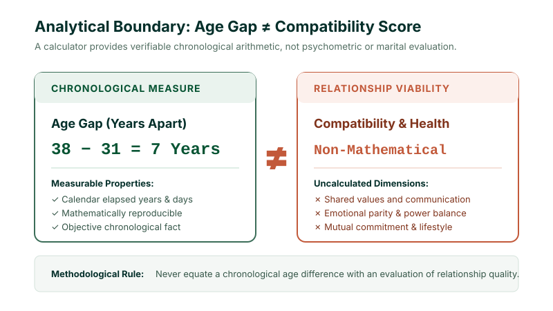

There is no single age-gap number that universally defines a good or successful relationship. An age gap is a mathematical difference between two ages, while the significance of that difference depends on life stage, circumstances, expectations, and individual preferences. A calculator can measure the difference, but it cannot measure relationship compatibility.
1. What Is an Age Gap in a Relationship?
An age gap in a relationship is simply the numerical difference between the ages of two partners. When someone asks about the age gap between a couple where Person A is 35 and Person B is 30, the calculation is basic arithmetic:
35 − 30 = 5 Years (A 5-Year Age Gap)
While the terms age gap and age difference are frequently used interchangeably in everyday conversation, people often adopt the word "gap" when speaking specifically about romantic relationships, marriage, or dating dynamics. The number itself is objective calendar arithmetic, but the meaning people attach to that number is entirely subjective and deeply contextual.
2. How Is an Age Gap Calculated?
The standard age gap formula uses straightforward whole-number subtraction:
Basic Age Gap Formula
Example: For an older partner aged 42 and a younger partner aged 35:
42 − 35 = 7 Years
The resulting age gap is exactly 7 years.
However, because Age Calculator Lab specializes in high-precision calendar mechanics, it is important to note that whole-year subtractions are approximations based on completed birthdays. If you know the complete dates of birth for both individuals, you can compute an exact calendar difference down to completed years, calendar months, and remaining days using our verified Age Difference Calculator.
3. Age Gap vs Age Difference: Are They the Same?
Although commonly treated as synonyms, distinguishing between the terms helps clarify what is being analyzed:
| Term | Common Definition | Typical Context |
|---|---|---|
| Age Difference | The numerical or calendar separation between two ages or dates | General (siblings, coworkers, historical figures) |
| Age Gap | The chronological distance separating two people | Commonly used in dating, marriage, and couple dynamics |
| Dating Age Rule | A mathematical rule of thumb calculating an acceptable range | Normative evaluation (e.g., half-your-age-plus-seven) |
| Exact Calendar Difference | Years, months, and days elapsed between two distinct birth dates | High-precision calendar accounting |
Consider an example: Person A is 40, and Person B is 32. Their age difference is 8 years. Their age gap is 8 years. Meanwhile, the dating age rule for Person A produces an acceptable range of 27 to 66. These three calculations provide completely different insights.
4. Is There a Good Age Gap in a Relationship?
The short answer is: there is no universally ideal age gap for every couple. No single number—whether it is 1 year, 3 years, 7 years, or 15 years—guarantees compatibility, happiness, or durability.
A numerical age gap describes how many years separate two people. It does not describe their emotional maturity, communication skills, shared financial goals, mutual respect, or relationship health.
Every relationship operates within a complex matrix of factors that far outweigh simple chronological subtraction:
- Life-Stage Parity: Are both partners in a similar phase of personal autonomy, education, career establishment, or retirement planning?
- Shared Family Timelines: Do both partners share compatible desires regarding having children, raising a family, or caring for aging parents?
- Communication & Conflict Resolution: How do the partners handle disagreement, stress, and decision-making?
- Financial Independence: Does the age difference create an unhealthy imbalance in earning power or dependence?
5. Why the Same Age Gap Can Mean Different Things at Different Ages
The most important demographic insight when evaluating relationship age differences is that the same numerical age gap carries vastly different significance across decades. Consider three distinct couples, each separated by an identical 7-year age gap:
- Couple A (20 and 27): A 7-year gap here often represents a significant developmental divide. The 20-year-old may be a college undergraduate navigating early independence, while the 27-year-old may have spent five years in the full-time workforce with established personal autonomy.
- Couple B (40 and 47): A 7-year gap here typically involves strong life-stage alignment. Both partners are mid-career adults with established routines, comparable responsibilities, and similar perspectives on work and family.
- Couple C (60 and 67): A 7-year gap here can intersect with retirement transitions and healthcare milestones, but both individuals share decades of adult life experience.

6. Common Age Gap Examples
Below is a reference table illustrating how age gaps are calculated across different couple pairings. You can test your own numbers with our Age Gap Calculator:
| Older Partner | Younger Partner | Calculated Age Gap | Relative Percentage Gap | Contextual Notes |
|---|---|---|---|---|
| 25 | 23 | 2 Years | 8.0% | Peer-group relationship; close life stage |
| 30 | 25 | 5 Years | 16.7% | Moderate gap; common adult pairing |
| 35 | 30 | 5 Years | 14.3% | High developmental parity |
| 40 | 30 | 10 Years | 25.0% | Decade gap; requires life-goal alignment |
| 45 | 35 | 10 Years | 22.2% | Mature adult pairing; shared career focus |
| 50 | 40 | 10 Years | 20.0% | Both partners established adults |
| 60 | 50 | 10 Years | 16.7% | Retirement timeline differences may arise |
Note: This table demonstrates chronological arithmetic only. It is not an assessment of whether any particular age pairing is universally appropriate or recommended.
7. What Is the Half-Your-Age-Plus-Seven Rule?
When discussions about relationship age gaps arise, people often bring up the half-your-age-plus-seven rule. This is an informal rule of thumb used to estimate a socially conventional lower age boundary:
Half-Your-Age-Plus-Seven Formula
Example for Age 40: 40 ÷ 2 + 7 = 20 + 7 = 27 Years.
For a full breakdown of where this formula came from, how it is inverted, and its historical origins, read our detailed guide: Dating Age Rule Explained: What Is the Half-Your-Age-Plus-Seven Rule?
8. Is the Dating Age Rule Scientific?
The half-your-age-plus-seven formula should be treated as a cultural heuristic and social conversation piece, not as an empirically validated scientific model. It does not measure:
- Emotional connection or empathy
- Communication styles or conflict resolution
- Shared values, ethics, or spiritual beliefs
- Financial compatibility and career balance
- Long-term marital stability
While psychological surveys show that people tend to be more accepting of wider age gaps as partners grow older, real-world relationship success depends on personal dynamics rather than adhering to an algebraic formula.
9. What Factors Matter Beyond Age?
When analyzing a relationship, focusing exclusively on the calendar gap overlooks the primary determinants of partnership health:
1. Life Stage and Milestone Alignment
Do both partners have congruent timelines regarding careers, home ownership, family planning, and leisure? When partners want fundamentally different things out of the next five years, life-stage friction can emerge regardless of their age gap.
2. Power Dynamics and Autonomy
A healthy relationship requires equal standing. Large differences in age can sometimes intersect with imbalances in financial resources, social capital, professional authority, or emotional experience. Ensuring mutual respect and independent agency is essential.
3. Communication and Conflict Resolution
How do the two people talk through stress, disagreement, and life changes? Healthy communication is a skill cultivated individually, not an automatic byproduct of chronological age.
4. Social and Family Support
Relationships with noticeable age gaps sometimes face outside skepticism from friends, extended family, or social circles. Navigating social commentary requires united, resilient partners.
10. When Does an Age Gap Become More Complicated?
An age gap itself is never an automatic disqualifier between consenting adults. However, certain relationship circumstances require heightened awareness and candid communication:
- Asymmetrical Life Transitions: When one partner is entering the workforce while the other is preparing for retirement.
- Biological & Family Timelines: If having biological children is a primary goal, biological realities and fertility windows must be evaluated transparently.
- Financial Dependency: When significant differences in accumulated wealth or career seniority make one partner financially vulnerable.
- Caregiving Anticipation: Larger age gaps mean that one partner may transition into a caregiving role earlier in life as age-related health needs emerge.

11. Age Gap and Life Stage: Why Context Matters
To further demonstrate why calendar subtraction alone is insufficient, consider the table below comparing identical numerical gaps across adult life stages:
| Couple Ages | Numerical Gap | Life-Stage Context | Typical Considerations |
|---|---|---|---|
| 22 & 27 | 5 Years | Early Adulthood Transition | Finishing studies vs. established career routines |
| 32 & 37 | 5 Years | Established Adult Phase | High parity in career, lifestyle, and domestic responsibilities |
| 42 & 47 | 5 Years | Mid-Career Stability | Shared focus on teenage children, finances, or personal pursuits |
| 52 & 57 | 5 Years | Pre-Retirement Window | Alignment on future retirement dates and health maintenance |
12. Age Gap Calculator vs Age Difference Calculator
Age Calculator Lab provides specialized tools for comparing personal timelines. Here is how to select the right tool for your specific goal:
| What Do You Want to Know? | Recommended Tool | Input Needed |
|---|---|---|
| “What is the exact calendar difference in years, months, and days between two birthdays?” | Age Difference Calculator | Two complete dates of birth |
| “How many years apart are two specific people based on their ages?” | Age Gap Calculator | Two chronological ages |
| “What is the theoretical range produced by the half-your-age-plus-seven rule?” | Dating Age Calculator | One or two adult ages |
| “What is someone's exact chronological age today?” | Age Calculator | Date of birth & today's date |
13. How to Calculate an Age Gap
Calculating a numerical age gap is simple:
- Identify Both Ages: Determine the completed chronological age of each individual (e.g., 38 and 31).
- Identify the Older Age: Place the larger number first (38).
- Subtract the Younger Age:
38 − 31 = 7. - Result: A 7-year age gap.
If you have exact dates of birth (e.g., March 12, 1988 and November 27, 1994), calculating the calendar difference requires accounting for differing month lengths and leap years. Our Age Difference Calculator handles day-borrowing across calendar months automatically.
14. Frequently Asked Questions
What is a good age gap in a relationship?
There is no universally ideal age gap. An age gap measures chronological separation, while relationship success depends on mutual respect, shared life goals, communication, and emotional maturity.
Is a 5-year age gap a lot?
A 5-year age gap is a modest chronological difference. Between adults in their thirties or forties, it typically involves near-identical life stages, whereas in early adulthood (e.g., 20 and 25) it can span different milestones.
Is a 10-year age gap a lot?
A 10-year gap means partners were born a decade apart. Between established adults who share life values, it is common and healthy; however, partners should communicate openly about long-term timelines and family planning.
What is the average age gap between couples?
Demographic surveys across Western countries typically show an average age difference of approximately 2 to 3 years among heterosexual couples, but age gaps vary widely across cultures, generations, and relationship types.
What is the half-your-age-plus-seven rule?
It is an informal rule of thumb: Minimum Age = Age ÷ 2 + 7. It estimates an informal lower age boundary based on a person's current age.
Is the half-your-age-plus-seven rule scientific?
No. It is a cultural heuristic, not an empirically validated scientific model for relationship compatibility.
How do I calculate an age gap?
Subtract the younger person's age from the older person's age: Older Age − Younger Age = Age Gap.
Is age gap the same as age difference?
Yes, in everyday conversation they refer to the same mathematical distance between two people, although "age gap" is more commonly used in romantic and relationship contexts.
Can an age gap calculator tell me if a relationship will work?
No. A calculator computes calendar arithmetic. It cannot evaluate emotional compatibility, shared values, or interpersonal dynamics.
Is an age gap a legal issue?
Between consenting adults, age gaps carry no legal restrictions. Statutory age-of-consent protections apply strictly to minors and depend on jurisdictional legislation.
15. Final Takeaway
An age gap tells you how many years separate two people. That calculation is straightforward, but interpreting what the difference means requires much more context. Life stage, expectations, independence, relationship goals, and individual circumstances all matter far more than arithmetic.
Dating-age formulas such as half-your-age-plus-seven provide interesting cultural benchmarks, but they should never be treated as scientific compatibility tests or universal recommendations. If you want to calculate the exact difference between two birthdays, use our verified tools:
18. Reviewed & Methodology
This guide explains calendar-based age-gap arithmetic and provides an objective explanatory framework for interpreting relationship age differences.
- Core Calculation:
Older Age − Younger Age = Age Gap. - Calendar Method: High-precision birth-date subtraction using completed calendar years, months, and days.
- Dating Rule Reference: Half-your-age-plus-seven social heuristic.
- Important Limitation: Numerical age gaps do not measure relationship compatibility, emotional maturity, or legal status.
- Last Editorial Review: October 2026 by Navjeet Kamboj.